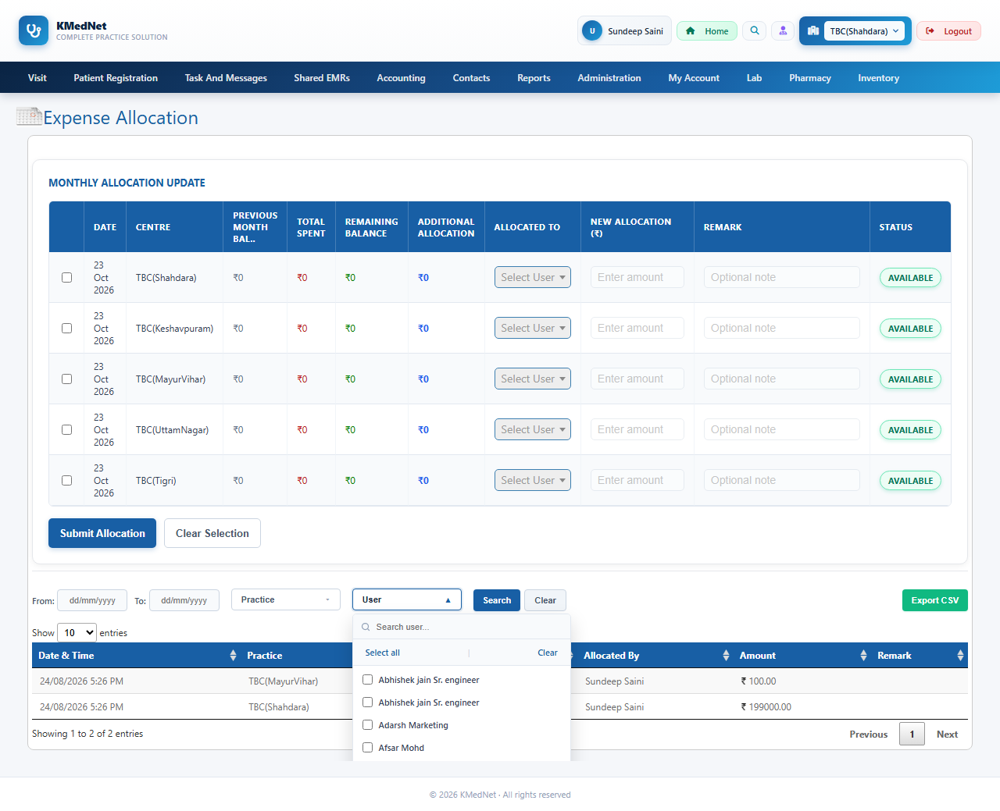

Total4
Script error1
Passed3
Script error The test could not perform a step (element missing, hidden or disabled). The test needs healing, not the app.
Generation notes
- TC_EA_002: no provable expected result - runs as a smoke test (no crash / server error)
- TC_EA_002: steps healed after: Step 3 'select 'Abhishek jain Sr. engineer' in 'All Users Abhishek jain Sr. engineer Abhishek jain Sr. engineer Adarsh Marketing' (ddlFilterUser)': el
- TC_EA_002: steps healed after: Step 4 'select 'Abhishek jain Sr. engineer' in 'All Users Abhishek jain Sr. engineer Abhishek jain Sr. engineer Adarsh Marketing' (ddlFilterUser)': el
- TC_EA_003: no provable expected result - runs as a smoke test (no crash / server error)
- TC_EA_003: steps healed after: Step 3 'select 'TBC(Shahdara)' in 'TBC(Shahdara) TBC(Keshavpuram) TBC(MayurVihar) TBC(UttamNagar) TBC(Tigri)' (ddlPracticeFilter)': element did not be
- TC_EA_003: steps healed after: Step 4 'select 'TBC(Shahdara)' in 'TBC(Shahdara) TBC(Keshavpuram) TBC(MayurVihar) TBC(UttamNagar) TBC(Tigri)' (ddlPracticeFilter)': element did not be
- TC_EA_004: no provable expected result - runs as a smoke test (no crash / server error)
- TC_EA_005: no provable expected result - runs as a smoke test (no crash / server error)
- Healing: TC_EA_002 (round 1): steps rewritten
- Healing: TC_EA_003 (round 1): steps rewritten
- Healing: TC_EA_002 (round 2): steps rewritten
- Healing: TC_EA_003 (round 2): steps rewritten
| ID | Scenario | Result | Reason | Time |
|---|---|---|---|---|
TC_EA_002 | Click search button after selecting a user filter smoke | Script error | Step 3 'select 'Abhishek jain Sr. engineer' in 'All Users Abhishek jain Sr. engineer Abhishek jain Sr. engineer Adarsh Marketing' (ddlFilterUser)': element did not become visible/enabled within 10s. | 13.88s |
Expected: no server error Why this is expected: btnSearch element is clicked Steps:
test_library/accounting_expenseallocation/20261023_125320_search_button/test_accounting_expenseallocation_20261023_125320.py::test_TC_EA_002[chromium]  | ||||
TC_EA_003 | Click search button after selecting a practice filter smoke · healed | Passed | — | 8.15s |
Expected: no server error Why this is expected: btnSearch element is clicked Steps:
Pop-ups shown by the app: Please select at least one practice test_library/accounting_expenseallocation/20261023_125320_search_button/test_accounting_expenseallocation_20261023_125320.py::test_TC_EA_003[chromium] | ||||
TC_EA_004 | Click search button with date range filled smoke | Passed | — | 0.8s |
Expected: no server error Why this is expected: btnSearch element is clicked Steps:
test_library/accounting_expenseallocation/20261023_125320_search_button/test_accounting_expenseallocation_20261023_125320.py::test_TC_EA_004[chromium] | ||||
TC_EA_005 | Click search button with maximum date range smoke | Passed | — | 0.77s |
Expected: no server error Why this is expected: btnSearch element is clicked Steps:
test_library/accounting_expenseallocation/20261023_125320_search_button/test_accounting_expenseallocation_20261023_125320.py::test_TC_EA_005[chromium] | ||||